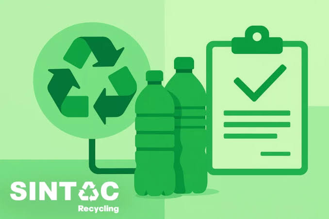
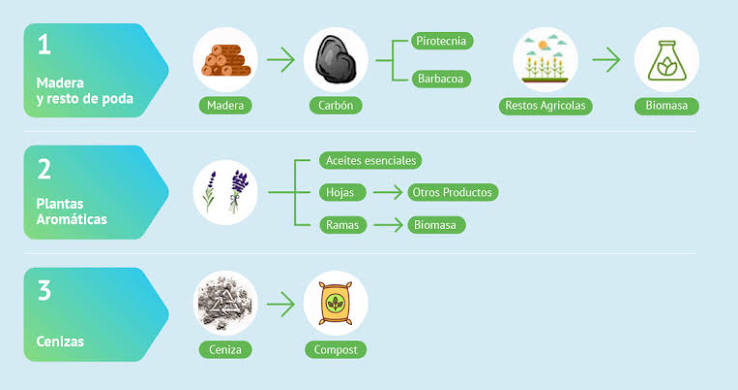

Mercados generados por nuestras THD
1. Ciudades inteligentes (smart cities)
Descripción: los ayuntamientos usan sensores y datos para gestionar mejor servicios
urbanos como la recogida de residuos. Con IoT y 5G se vacían solo los contenedores llenos.
Ejemplo real: la empresa Bigbelly vende papeleras y contenedores compactadores con
sensores y energía solar a ciudades. Web: Bigbelly.
2. Software como servicio (SaaS) de gestión de residuos
Descripción: plataformas en la nube que se contratan por suscripción para planificar
rutas, monitorizar contenedores y analizar datos.
Ejemplo real: la empresa eslovaca Sensoneo ofrece sensores y software de gestión de
residuos para ciudades y empresas. Web: Sensoneo.
3. Trazabilidad y plástico reciclado certificado

Descripción: las marcas necesitan demostrar que su material reciclado es real. La
blockchain permite registrar el recorrido del residuo y crear confianza.
Ejemplo real: Plastic Bank paga a personas por recoger plástico y registra su
recorrido con tecnología blockchain. Web: Plastic Bank.
4. Materias primas secundarias y clasificación automatizada

Descripción: la IA y los robots permiten obtener materiales reciclados de mayor
calidad, que se venden como materia prima a la industria.
Ejemplo real: AMP Robotics desarrolla robots con IA que clasifican residuos en
plantas de reciclaje. Web: AMP Robotics.
THD emergente: biotecnología industrial
Por qué nos interesa: los plásticos mezclados o muy contaminados son difíciles de
reciclar de forma mecánica. Los procesos con enzimas podrían tratarlos con menos energía.
Mercado emergente al que apunta: el reciclado químico y enzimático de plásticos y los
bioplásticos.
Ejemplo real: la empresa francesa Carbios trabaja en el reciclado enzimático del
plástico PET. Web: Carbios.
Nuestro papel: con BioVigía asesoramos a los clientes sobre cuándo es viable
incorporar esta tecnología.